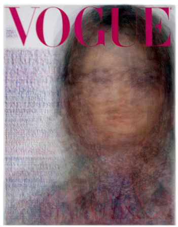
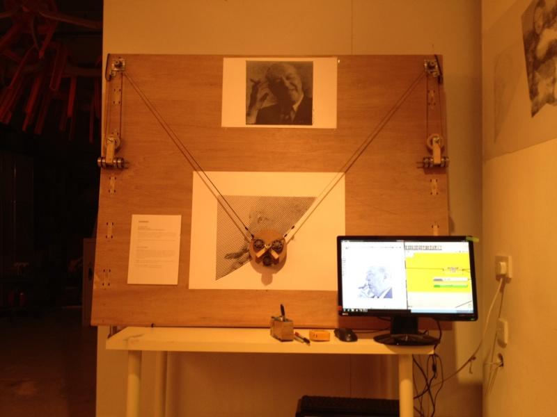
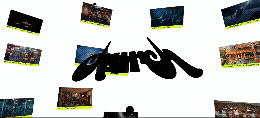

this was
the research that was
collated for the weeks of 6-9.

this is an interesting representation of data, trending styles and art. it provides insight into our patterns as humans and artists - which is a concept i really enjoy.
this project is a perfect example of the combination of physical computing, sound and interactivity; the use of light and sound, in conjunction with a user interface, to alter the external environment.
this is the edge between music theory and interface design, code and musical material, artist and organizer, musician and developer. its insane.

this is a new concept of art that is only just emerging onto the scenescape of contemporary art. its new and interesting; there are so many capabilities with programs such as this one.
rist’s work made me think about how code and sensors can shape physical spaces in subtle, organic, and responsive ways - and how even physical computing design can be human-like.

These design choices contribute to a memorable and engaging user experience, aligning with contemporary web design trends that emphasise interactivity and visual depth.